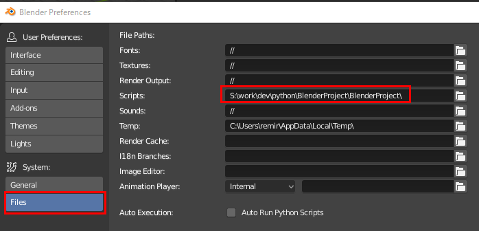
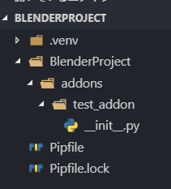
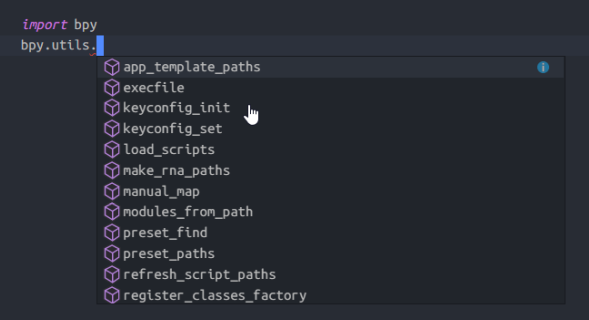

Blender の開発環境を作る
開発用スクリプトのフォルダを追加する
通常のプラグインのインストールフォルダは
C:\Users\
このフォルダ下になるが、この下に開発用のコードも置いてしまうのはイヤなので、
別の Scripts フォルダを設定する。

Preferences の Files 下の「Scripts」に、スクリプトの作業フォルダを設定する。

自分の場合は、pipenv でプロジェクトを作成しているので、基本構造は ↑ のようになります。
Scripts で指定した Path は、各種スクリプトの Root フォルダになっているので
Blender で読み込む Addon は、
addons フォルダ下に保存しないと、Addon リストには表示されない ので注意。
実際の Blender の Addon は .py 単体か、
あるいはフォルダに init.py を作成し、
その中に Addon の基本構造が書かれているかのいずれかで作成する。
VSCode で AutoComplete できるようにする
VSCode でコーディングするのに、AutoComplete がないのは不便なので設定をする。
{
"settings": {
"python.pythonPath": "<Blender_Folder>\\2.80\\python\\bin\\python",
"python.autoComplete.extraPaths": [
"<Blender_Folder>\\2.80\\scripts\\modules"
]
}
}
pythonPath は、 python/bin/python
あとは、bpy モジュールのパスを python.autoComplete.extraPaths に追加する。

パスを登録して VSCode を再起動すると、↑ のように予測変換が表示される。